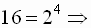
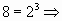
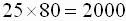
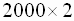
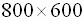
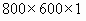
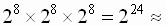
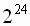
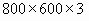

Мониторы современных компьютеров могут работать в 2-х режимах: текстовом и графическом. Текстовый режим является основным; в дальнейшем, по команде ОС, монитор переключается в графический режим.
В текстовом режиме экран разбивается на строки и столбцы (обычно это 25 строк по 80 столбцов). В каждой позиции, которая называется знакоместо, может помещаться один символ. В этом режиме на экран можно выводить тексты и простые рисунки, составленные из символов псевдографики, т.е. те символы, которые есть в таблице ASCII.
Как мы уже знаем, для представления одного символа требуется 1 байт памяти. Но у каждого символа на экране монитора есть ещё и цветовые характеристики: цвет символа, цвет фона и признак мерцания. Символ может быть высвечен одним из 16-ти цветов (под представление цвета символа требуется 4 бита). Цвет фона может быть 8 цветов;  для записи цвета фона требуется 3 бита. И, кроме того, символ может мерцать (0 – не мерцает, 1 – мерцает). Следовательно для описания каждого знакоместа требуется: 8 бит (на собственно символ) + 4 бита (цвет) + 3 бита (фон) + 1 бит (мерцание) = 2 байта (первый байт – сам символ, второй байт – его цветовые характеристики).
Пример 1. Информация о мерцающем символе латинского алфавита “А”, изображённого красным цветом на зелёном фоне, выглядит следующим образом:
| 0 |
1 | 0 | 0 | 0 | 0 | 0 | 1 | 1 | 0 | 1 | 0 | 0 | 1 | 0 | 0 |
| Начертание символа | ф |
о |
н |
ц |
в |
е |
т |
||||||||
Итак, при стандартном режиме на экране  знакомест. В каждом может находиться 1 символ. Таким образом, любой текст или рисунок в текстовом режиме монитора в видеопамяти компьютера занимает:
 байта = 4000 байт ≈ 4Кб.
В графическом режиме экран разделяется на отдельные светящиеся точки – пиксели, количество которых определяется разрешающей способностью монитора и зависит от его типа и режима. Существуют различные формы представления графического изображения.
Если графическое изображение хранится в памяти в виде информации о каждом пикселе: светится / не светится, и каким цветом, такую форму представления графических изображений называют растровой.
В зависимости от того, сколькими цветами можно высветить каждый пиксель, рассчитывается размер памяти, отведённый под картинку.
Если монитор работает в чёрно-белом режиме, то используется всего 2 цвета (горит/не горит), следовательно, для записи в память достаточно 1 бита на пиксель. Если монитор работает с 16-ю цветами, требуется уже 4 бита на пиксель. Если используют 256 цветов, требуется 8 бит на пиксель. Существует графический режим (High Color), в котором для представления цвета используют 2 байта. Таким образом можно закодировать 65536 различных цветов.
Число бит, отводимых в видеопамяти под каждый пиксель, называют битовой глубиной.
Посчитаем, сколько места занимает в видеопамяти картинка, если разрешение экрана  пикселей, а монитор поддерживает 256 цветов:
байт = 480000 байт ≈ 470 Кб.
Однобайтная кодировка цвета (256 различных цветов) называется индексной, т.к. каждый цветовой оттенок кодируется одним числом, которое выражает не цвет, а индекс (номер цвета) в некоторой таблице (палитре цветов). А цветовая палитра может быть разная. Таким образом, к файлу цветового изображения, созданного в индексной палитре, должна быть приложена сама палитра. Иначе есть вероятность увидеть картинку, принесённую с другого компьютера, совсем в “другом цвете”. Кроме того, файлы в Web-графике должны иметь минимальный размер, поэтому необходимо было отказаться от включения в их состав индексной палитры.
Поэтому изображения, подготавливаемые для Интернета, принято создавать, в т.н. безопасной палитре цветов (она является вариантом индексной). Для этого была принята единая фиксированная палитра цветов, содержащая всего 216 цветов, что связано с требованием совместимости с компьютерами, не относящимися к классу IBM PC.
Ещё один универсальный способ описания цвета – триадой красный–зелёный–синий (Red–Green–Blue), где насыщенность каждого цвета меняется от 0 до 255 (белый цвет кодируется как 255,255,255; чёрный как 0,0,0). Но при таком способе “конструирования” цвета потребуется уже по 3 байта на каждый пиксель. Зато суммарное количество оттенков, которое можно получить будет:  16 млн. 777 тыс. 216. Такой графический режим называется True Color.
Посчитаем, сколько места занимает в видеопамяти картинка, если разрешение экрана пикселей, а монитор поддерживает цветов:
байта ≈ 1,4 Мб.
Теперь понятно, почему разработчики компьютерных игр ограничиваются однобайтным представлением цвета, т.к. иначе никакой видеопамяти не хватит, чтобы обеспечить приемлемую мультипликацию.
Надо сказать, что способ описания цвета в виде RGB не является единственным. Модель RGB используется при создании и обработке компьютерной графики, предназначенной для электронного воспроизведения (на мониторе, экране телевизора).
Цветовая модель HSB разработана с максимальным учётом особенностей восприятия цвета человеком. Цвет описывается тремя компонентами: оттенком (Hue), насыщенностью (Saturation) и яркостью (Brightness). Эту модель принято использовать при создании изображений на компьютере с имитацией приёмов работы и инструментария художников. После создания изображения его рекомендуется преобразовывать в другую цветовую модель, в зависимости от предполагаемого способа публикации.
Цветовую модель СМYК (цветоделение) используют при подготовке к печати на полиграфическом оборудовании. Цветовыми компонентами здесь служат цвета, получаемые вычитанием основных трёх цветов из белого.
Есть и другие модели для представления цвета.
Кроме растровой формы хранения изображения, существуют и другие, например, векторная. Здесь базовым элементом является не точка, а линия. Линия описывается математически как единый объект, и потому объём данных для хранения информации здесь существенно меньше.
Есть ещё фрактальная графика, основанная, как и векторная, на математических вычислениях. Базовым элементом здесь является сама математическая формула, таким образом, никаких объектов в памяти компьютера не хранится и изображение стоится исключительно по уравнениям.
1.Какой объём видеопамяти необходим для хранения четырёх страниц изображения, если битовая глубина равна 24, а разрешающая способность дисплея – 800х 600 пикселей?
2. Объём видеопамяти 1Мб. Разрешающая способность дисплея 800х600 пикселей. Какое максимальное количество цветов можно использовать при условии, что видеопамять делится на две страницы?
3. Битовая глубина равна 24. Сколько различных оттенков красного, зелёного и синего используется для формирования цвета?
4. Для хранения области экрана монитора размером 512х256 точек выделено 64 Кбайта памяти. Какое максимальное количество цветов допустимо использовать?